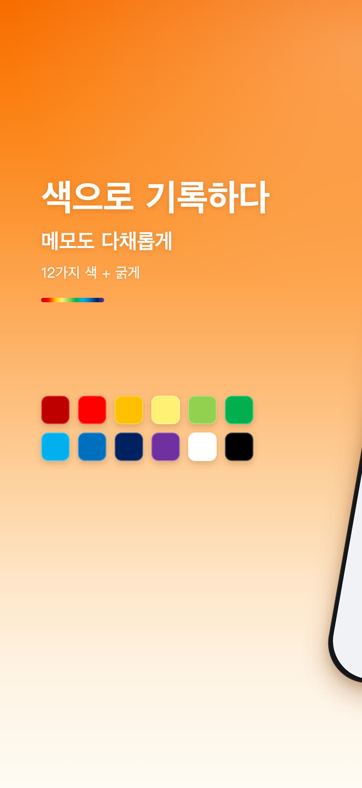
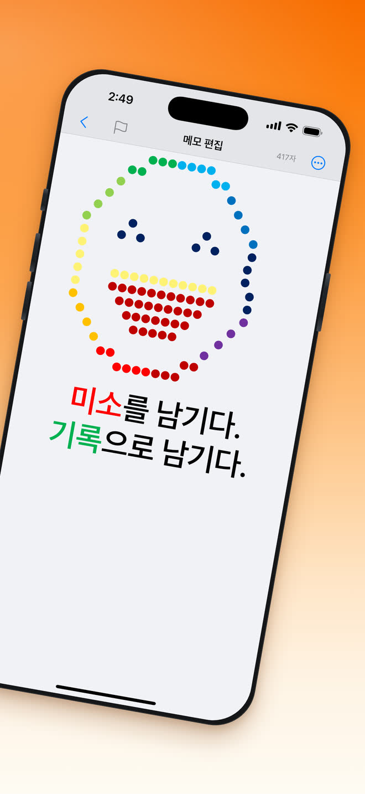

열면 바로 쓰기
가입도, 튜토리얼도, 초기 설정 화면도 없습니다. 앱을 열면 커서가 이미 기다리고 있습니다.
무료 · iPhone · 30개 언어
단순할수록 효율적입니다. 미니멀 노트 — 열자마자 바로 쓸 수 있는 완전 무료 메모장, 언제 어디서나.
공유
색
메모가 꼭 흑백일 필요는 없습니다. 12가지 표준 색과 굵게가 편집 도구 막대에 바로 놓여 있고, 마지막에 쓴 색도 기억합니다.
12가지 색 + 굵게
미소를 남기다.
기록으로 남기다.


할 수 있는 것
대시보드도, 튜토리얼도, 관리해야 할 폴더 구조도 없습니다. 메모장에서 실제로 쓰는 기능만 남겼습니다.
가입도, 튜토리얼도, 초기 설정 화면도 없습니다. 앱을 열면 커서가 이미 기다리고 있습니다.
표준 색 전체와 굵게를 입력 중에 한 번만 눌러 사용합니다.
키워드를 입력하면 목록이 실시간으로 좁혀집니다. 폴더나 태그를 관리할 필요가 없습니다.
시스템 설정을 자동으로 따릅니다. 한밤중에 적은 메모도 있어야 할 모습 그대로입니다.
전용 실행 취소와 다시 실행 버튼, 제목 표시줄에는 글자 수가 실시간으로 표시됩니다.
메모는 기기 안 데이터베이스에 저장되며 기록될 때 암호화됩니다. 내용이 서버로 올라가지 않습니다.
화면 전체가 시스템 언어를 따르거나, 설정에서 직접 고른 언어를 씁니다.
iOS 기본 공유 시트로 메일, 메시지 등 설치된 어떤 앱으로도 보낼 수 있습니다.
검색
키워드를 입력하면 메모가 입력하는 동안 걸러집니다. 폴더도, 태그도, 정리도 필요 없습니다. 찾던 그 한 줄이 알아서 위로 올라옵니다.

다크 모드
미니멀 노트 — 시스템 설정을 자동으로 따릅니다. iPhone을 다크 모드로 바꾸면 메모도 함께 바뀌고, 같은 글자 색이 어두운 배경에서도 또렷하게 보입니다.

자주 묻는 질문
네. 다운로드와 사용 모두 무료이며, 글을 쓰는 기능 중에 유료로 잠긴 것은 없습니다.
아니요. 가입도 로그인도 없습니다. 앱을 열면 첫 메모까지 한 번만 누르면 됩니다.
iPhone, iOS 16.0 이상입니다.
사용 중인 iPhone 안의 데이터베이스에 저장되며 기록될 때 암호화됩니다. 메모 내용은 서버로 올라가지 않습니다.
가능합니다. 편집 도구 막대에 12가지 표준 색과 굵게가 있고, 마지막에 쓴 색도 기억합니다.
미니멀 노트 — 30개 언어를 내장하고 있습니다. 시스템 언어를 따르거나 설정에서 직접 고를 수 있습니다.